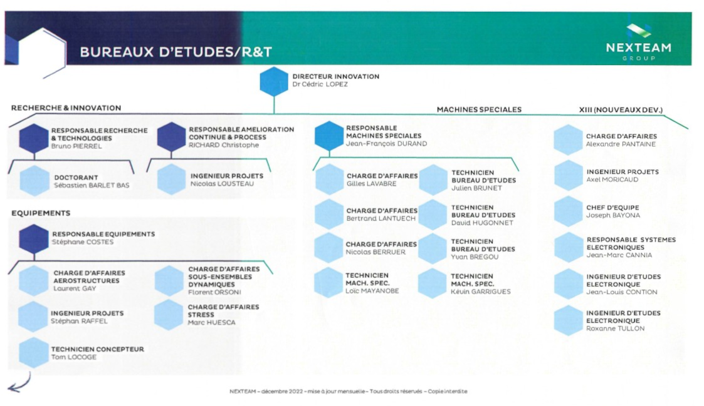
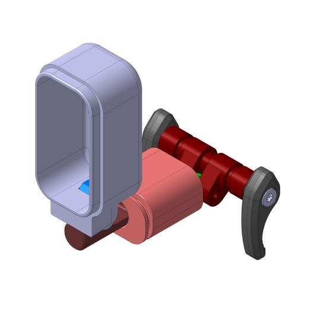
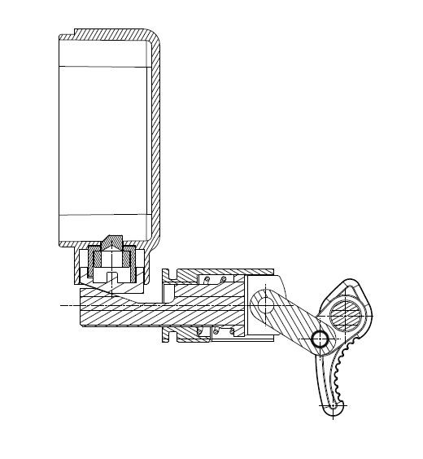
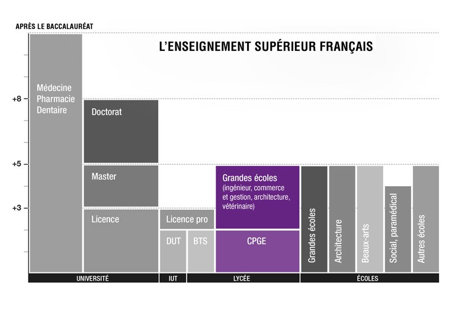

NEXTEAM
Rue Jacqueline Auriol, 13700 Marignane
Problématique
En quoi ce stage en entreprise m’a-t-il permis d’enrichir ou influencer mon projet d’orientation ?
SOMMAIRE
- Présentation de l’entreprise :
- Fiche d’identité
- Historique de l’entreprise
- Organigramme de l’entreprise
- Présentation de activité réalisée :
- Activité faite durant le stage
- Présentation des métiers de l’entreprise :
- Lister et détailler les différents métiers de l’entreprise
- Mobilisation et l’interview d’un métier
- Réalisation de la fiche d’un métier
Présentation de l’entreprise
Fiche d’identité
NEXTEAM
Adresse : Rue Jacqueline Auriole, 13700 Marignane
Implantation : Zone industrielle, Parc technologique
Secteur d’activité : Secteur tertiaire
Domaine d’activité : Industrie
Effectif : 2 000 personnes pour le groupe NexTeam dont 10 sur le site de Marignane
NEXTEAM les locaux
Locaux : un accueil, des bureaux et un atelier
Sécurité : alarmes, extincteurs, badge de sécurité (pour ouvrir les portes)
Informatique : ordinateurs, imprimantes, imprimantes 3D et connexion internet
Tenues vestimentaires : seulement des EPI (en fonction du poste sur le site)
Historique de l’entreprise
Entreprise familiale depuis 60 ans
En 2011 création du bureau d’étude par Cédric LOPEZ (directeur aujourd’hui)
Entreprise répondant à un besoin d’usinage, de position d’entreprise.
L’entreprise aujourd’hui :
Possède un comité d’entreprise et seulement 10 membres (sur le site de Marignane)
L’entreprise de demain :
De nouvelles embauches, plus d’employés
Pouvoir créer des produits propre à l’entreprise
Organigramme de l’entreprise

Présentation des activités réalisées
Activité faite durant le stage
Conception d’un outillage
- Rédaction du cahier des charges
- Recherche des composants
- Réalisation d’un outillage en 3D
L’outillage : un dispositif d’éjection
 
Présentation des métiers de l’entreprise :
Les différents métiers de l’entreprise :
Directeur ou chef de projet :
- dirige l’entreprise
- s’occupe des projets
- fait le lien entre les autres entreprises
Technicien :
- s’occupe de l’atelier
- s’occupe des activités en usinage
Ingénieur :
- en conception
- optimise le prix des pièces
- recherche et innovation
Étudiants en ingénierie :
- participent aux projets
- suivent les cours
Mobilisation et interview d’un métier :
Personne interviewée : Ashley
Son métier : ingénieur d’étude
Pourquoi ce métier ?
Pour participer à des projets, vouloir changer les choses, aider et apporter du changement
| Métier | Ingénieur d’étude |
| Temps de pratique du métier | 1 an |
| Son rôle | Aide à la conception |
| Quels diplômes/formations sont requises pour ce métier | Classe préparatoires puis école d'ingénieur master à l'université |
| Son parcours personnel | Bac +5 : licence aéronautique 🠖 master en conception |
| Possibilité d’évolution ? | Ingénieur 🠖 bureau d’etude 🠖 chef de projet 🠖 directeur |
| Les avantages de ce métier | Apprentissage, une motivation |
| Les inconvénients ? | Après conception ne pas pouvoir voir son produit avant la livraison |
| Les qualités necessaires pour ce métier | Rigueur, organisation, précision et ne rien négliger |
| Temps de travail par semaine | Pour une alternante : 35h à 38h de travail |
| Fourchette de rénumération | Environ 800 à 900€ |
Réalisation de la fiche d’un métier
fiche metier 1
Réalisation de la fiche d’un métier
fiche metier 2
Conclusion
Conclusion :
- Stage fascinant et passionnant
- Membres de l’équipe rigoureux, précis mais aussi chaleureux
- Un travail d’ingénieur fidèle à l’image que je m’en faisais
Ma poursuite d'étude envisagée

fin de la présentation